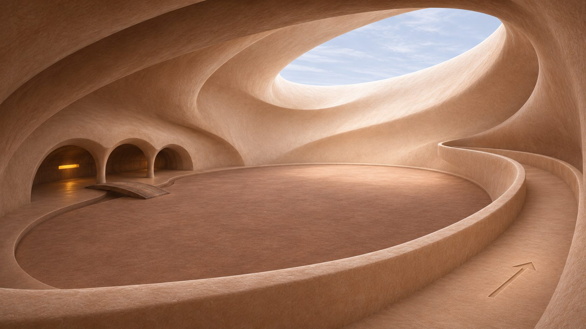
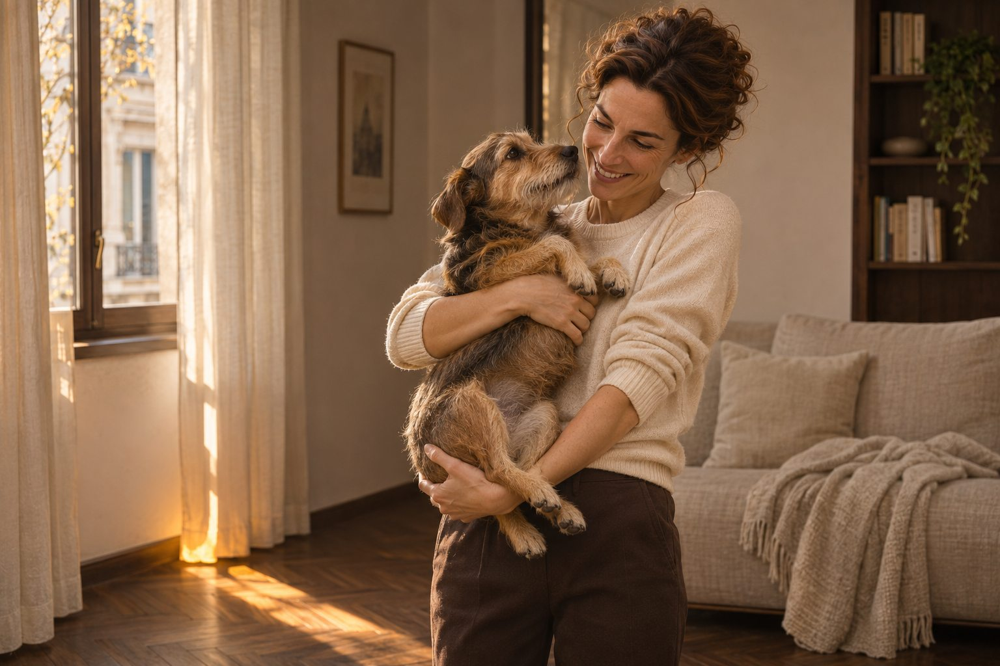
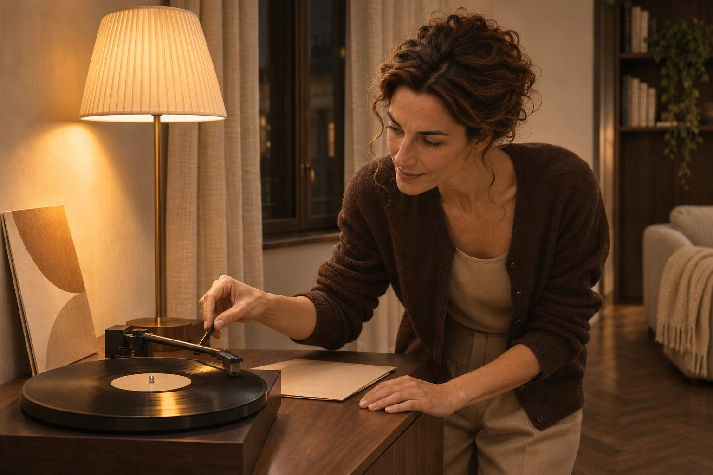
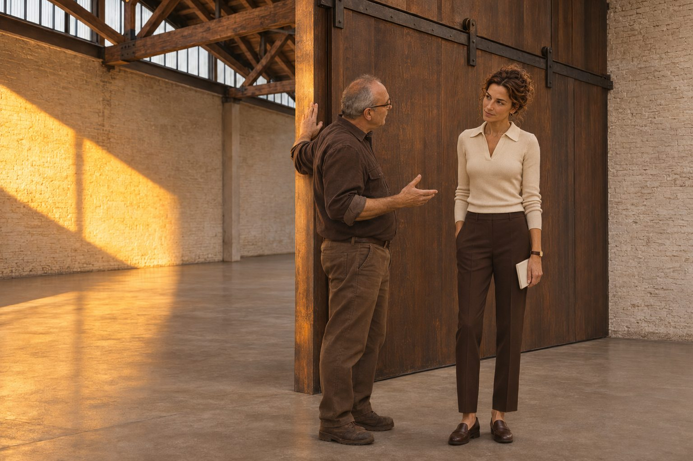

Avvocata · civile e penale · Milano
Chisono
Sono un'avvocata civilista e penalista. Dal 2008 assisto a Milano persone e famiglie nei momenti in cui la legge entra nella loro vita all'improvviso: una separazione, un'eredità contesa, una denuncia, un processo.
Il mio studio è a pochi passi dal Palazzo di Giustizia. Lavoro da sola, per scelta: chi mi affida un problema parla con me dal primo incontro all'ultima udienza.



Piacere
Sono Angela, e ti ascolto.
Ho scelto questo lavoro perché credo che nessuno debba affrontare da solo il momento in cui la legge gli cambia la vita. Una separazione, un'eredità che divide una famiglia, una denuncia arrivata all'improvviso: in quei giorni servono competenza e calma, e qualcuno che ti spieghi con parole semplici cosa sta succedendo.
Quando chiudo lo studio torno alle cose semplici: gioco con il mio cane, che mi aspetta sempre alla porta, e la sera metto un disco e lascio che la musica chiuda la giornata.
Andare avanti
Ti aiuto a uscire da un momento difficile con un piano chiaro.
Seguo cause civili e procedimenti penali davanti al Tribunale e alla Corte d'Appello di Milano e, quando serve, davanti alla Corte di Cassazione. Ogni pratica la studio io, scrivo io gli atti e vengo io in udienza.
La mia storia
Sono nata a Bergamo nel 1985 e mi sono laureata in Giurisprudenza all'Università Statale di Milano. Ho fatto la pratica in uno studio penale del centro, imparando presto che un processo si prepara molto prima dell'udienza. Nel 2008 sono diventata avvocata.
Per sei anni ho lavorato in uno studio associato, tra cause di famiglia e processi penali. Nel 2014 ho aperto il mio studio, per seguire meno pratiche ma seguirle da vicino, una per una.
Oggi mi occupo di separazioni e figli, eredità, casa e risarcimenti, e di difesa penale, sia per chi è accusato sia per chi ha subito un reato. Sono iscritta all'elenco dei difensori d'ufficio.

Il mio percorso
Come lavoro
Un'avvocata sola
Non passi da un collaboratore all'altro. Studio io il tuo caso, scrivo io gli atti, vengo io in udienza. Se un giorno non posso esserci, lo sai prima, e sai chi mi sostituisce.
Il costo, detto prima
Prima di cominciare ricevi un preventivo scritto, voce per voce. Se il lavoro cambia strada, ne parliamo prima, non a cose fatte.
Parole chiare
Le decisioni legali sono difficili. Ti spiego le strade possibili e i rischi di ognuna con parole semplici, e ti lascio il tempo di scegliere.
Sempre raggiungibile
Rispondo alle email entro un giorno lavorativo. Per le urgenze vere, un'udienza, una notifica o un arresto, c'è il telefono.
Il mio studio
La fiducia si costruisce un incontro alla volta.
Con me lavorano un praticante e una segretaria: sono loro a risponderti al telefono e a fissare gli appuntamenti. Le decisioni sul tuo caso, però, le prendiamo sempre io e te.
Lo studio è al secondo piano di un palazzo d'epoca in Via Manara, a tre minuti a piedi dal Palazzo di Giustizia, con una sala riservata per i primi incontri. Se non puoi venire, ci vediamo in videochiamata.
Dove sono →Il mio impegno
Nessun avvocato onesto può prometterti come finirà. Io posso prometterti che saprai sempre a che punto sei, cosa rischi e cosa puoi fare.

La clemenza non si impone: cade come la pioggia gentile dal cielo.
William Shakespeare, Il mercante di Venezia
Grazie di essere arrivato fin qui.
Se vuoi, raccontami cosa ti è successo. Scrivimi